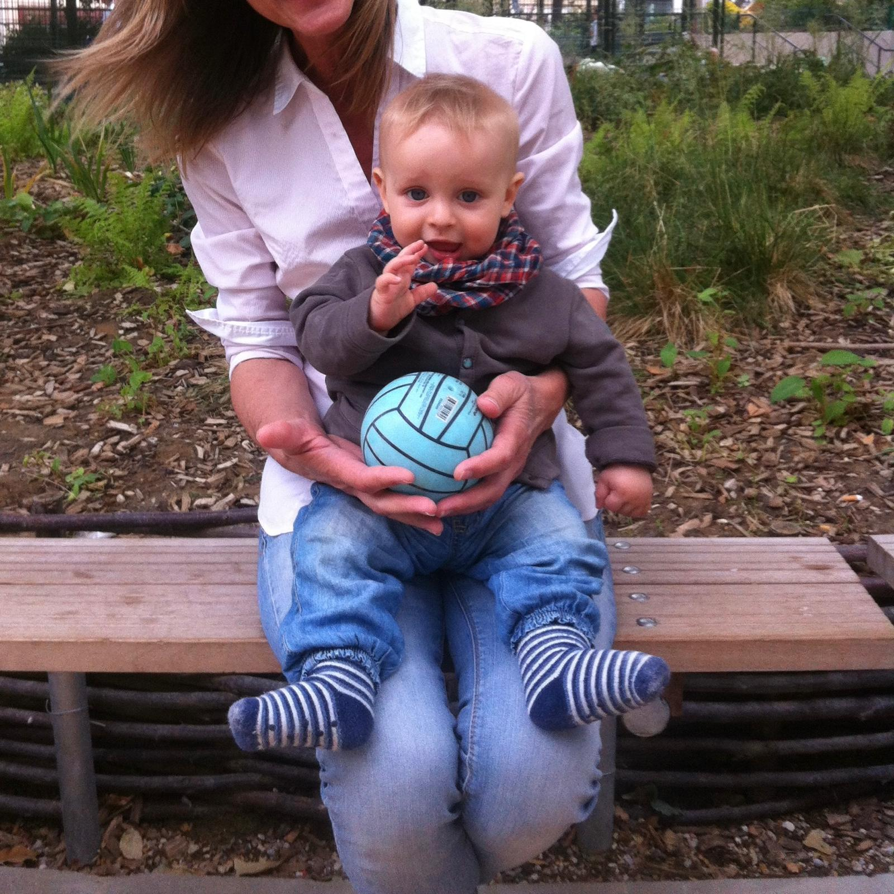
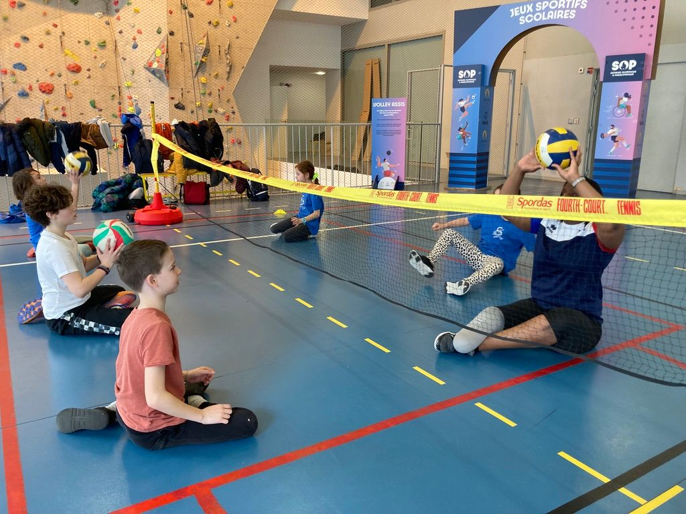
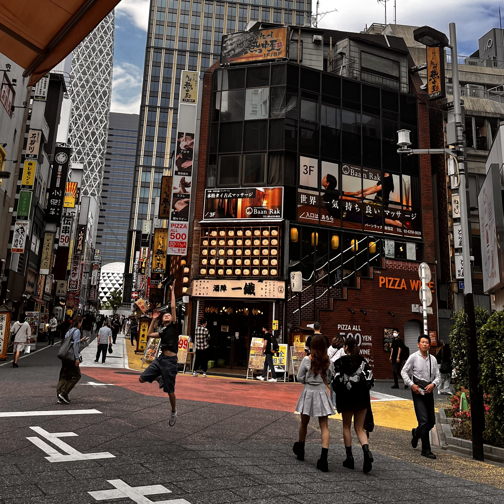
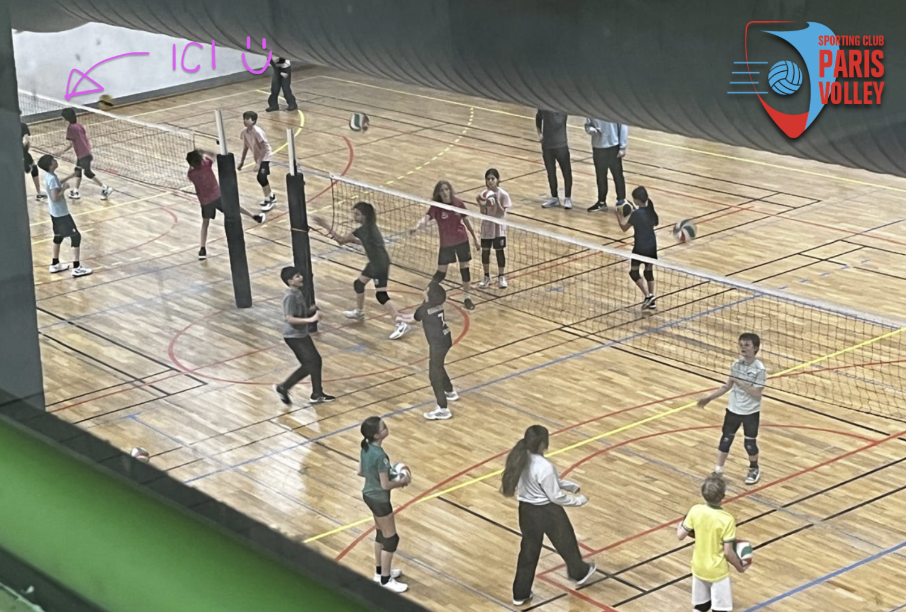
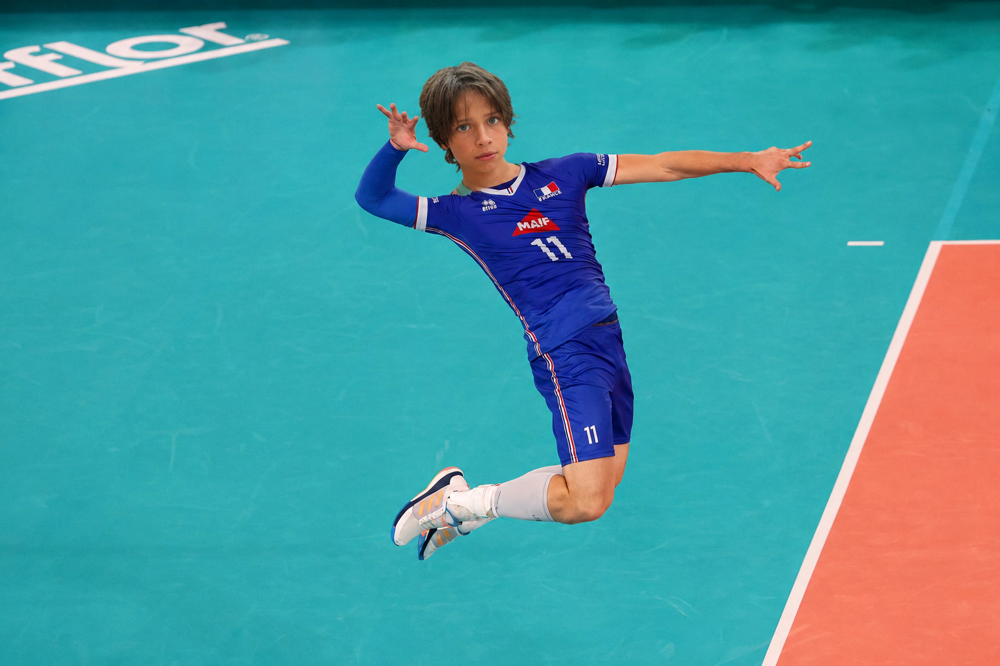
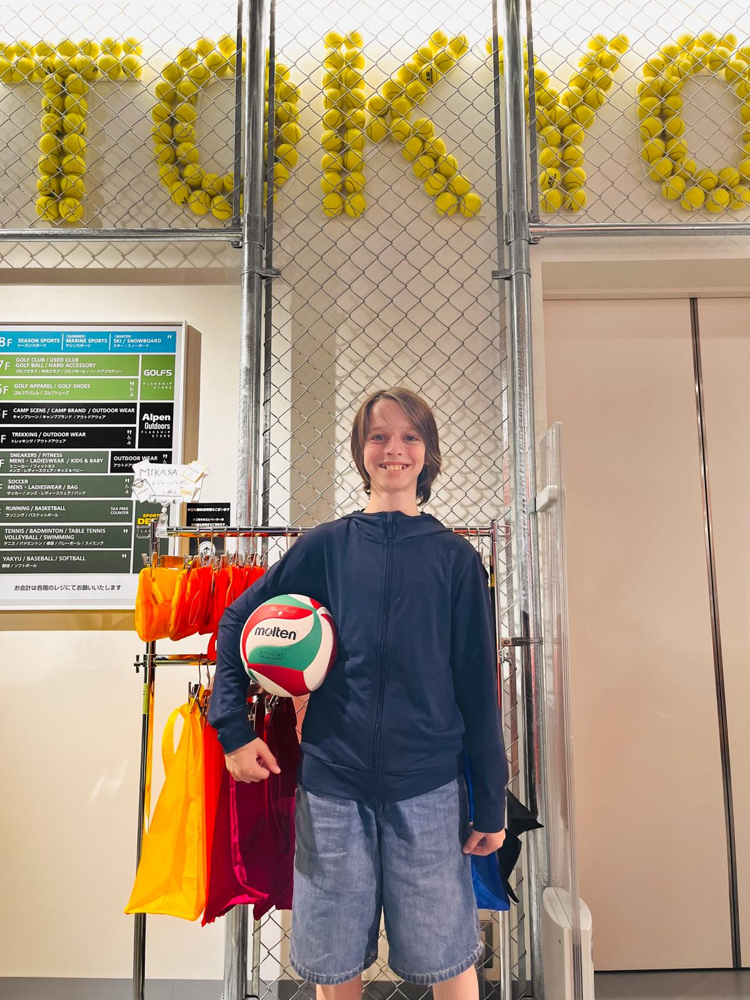

Ma passion du volley
Mon sport préféré
Joue depuis la 6ème
Joue tous les jours
Depuis quand joues-tu au volley ?
Depuis la 6ème, mais j'ai envie de dire depuis un peu toujours car depuis petit j'adore les jeux de balle où on se la lance, on se la passe et on la rattrappe.

Depuis tout petit, c'est dans mes gènes 🏐
Pourquoi as-tu choisi ce sport et pas un autre ?
J'ai découvert ce sport le premier trimestre de sixième, grâce à Madame Piguet, ma professeur de sport, qui est passionnée de volley. Ça a été une réelle découverte et un coup de cœur ! Depuis petit j'ai toujours adoré les jeux de balle où on se fait des passes et où on doit la maîtriser ou faire un maximum de passes. On y a toujours beaucoup joué à la maison avec ma sœur et mes parents.
💛
En CM2 j'ai aussi joué au volley handisport avec des joueuses de l'équipe de France de Volley handisport. Elles avaient des prothèses. C'était vraiment bien, tout le monde jouait ensemble et c'était super. Ça m'a montré que le volley c'est un sport qui rassemble vraiment tout le monde. C'était très émouvant aussi, et elles jouaient super bien !

Volley handisport en CM2, moi contre une véritable championne de France handisport qui était hyper forte !
Qu'est-ce que tu ressens quand tu joues ?
De la joie, du plaisir, du challenge, la satisfaction d'un coup bien réalisé.
À quoi penses-tu juste avant un match ?
Que je vais m'amuser, une volonté de gagner et de reproduire des tactiques travaillées.
Quel moment te donne le plus d'adrénaline ?
Au moment des points décisifs. Une fois il y avait 26-25, je me souviens de ce point, nous l'avons hélas perdu.
Pourquoi veux-tu entrer en classe de volley ?
J'aime le volley, ça a pris une place importante dans ma vie. C'est une passion pour moi, mon sport préféré.
Qu'est-ce que cette classe peut t'apporter ?
Poursuivre ma passion du volley, m'améliorer en jouant beaucoup, avec de très bons joueurs et bénéficier des conseils du professeur ! Et bien sûr rester dans ce groupe d'amis qui a une excellente ambiance !
Est-ce que le volley a changé quelque chose dans ta vie ?
Je suis plus à l'écoute de mes partenaires, je suis meilleur au niveau de la concentration pour apporter le meilleur à l'équipe. Le volley m'apporte de la sérénité. Il m'apprend à gérer ma frustration, notamment quand je perds.
Émotions & souvenirs
1er entraînement décisif
Smash sauté gagnant
Défaite qui m'a appris
Ton meilleur souvenir au volley ?
Celui qui me revient en premier : le premier entraînement. Raoul s'était occupé de moi pour l'intégration, j'avais le sentiment de faire partie du club auquel je rêvais d'appartenir. C'est là où tout a commencé. Ce premier jour a été décisif.
Le moment où tu as été le plus fier ?
Le moment en match où j'ai fait un smash sauté frappé et que j'ai gagné le point.

Le service sauté 💥
Le moment où tu as eu le plus de stress ?
Quand on a perdu contre Thomas Mann 1 à 25-23. Cette défaite m'a fait mal et m'a beaucoup appris.
Un moment drôle avec ton équipe ?
Un moment où un joueur de l'équipe adverse a dunké sur son coéquipier au lieu de faire une passe.
Mon mental
Concentration maximale
Gère la frustration
Met ses coéquipiers en confiance
Quelle est ta plus grande qualité ?
Le service.
Dans quoi dois-tu progresser ?
Je veux me perfectionner en tout, mais mes passes à 10 ne sont pas aussi élégantes et efficaces que certains : ils semblent effleurer la balle, et envoyer très loin sans un bruit et sans effort apparent, alors que c'est une technique qui sollicite tout le corps. J'aimerais aussi être encore meilleur a l'attaque sautée frappée. À cause de ça et à cause de ma taille je n'ose pas suffisamment attaquer alors que j'adore ça.
Comment réagis-tu après une erreur ?
Nervosité et je me sens coupable.
Comment motives-tu tes coéquipiers ?
Check, et mise en confiance quand ils loupent un coup, même si parfois ça me frustre.
Quelle difficulté as-tu réussi à dépasser ?
Le service. C'était mon objectif numéro 1, d'autant que c'est l'engagement, le seul moment où on est en total control. C'est un avantage décisif.
Questions techniques
Poste : attaquant / réceptionneur
Geste préféré : le smash
Défi : la passe à 10
Ton poste préféré ?
Au volley à 4 : l'attaquant / réceptionneur, car j'adore réceptionner les services adverses et smasher en attaque. Il faut être rapide et exécuter parfaitement des gestes techniques. Et on est sur les deux moments décisifs d'un point.
Ton geste préféré ?
Le service et l'attaque sautée frappée.

À Tokyo, même dans la rue, le smash c'est une obsession 🇯🇵
Ton exercice d'entraînement préféré ?
L'entraînement passe et attaque sautée frappée.
Celui que tu aimes le moins ?
Il n'y en a pas qui vient à l'esprit, ils sont tous bien.
L'équipe
Fier de porter le maillot
Solidarité & esprit d'équipe
Bonne humeur
Tu préfères attaquer, défendre ou encourager ?
Défendre.
Qu'est-ce qu'une bonne équipe selon toi ?
Une équipe complète, chacun à son poste, avec une bonne qualité technique et qui se fait confiance.
Qu'est-ce qui fait gagner une équipe ?
Le talent des joueurs, bien se connaître, les automatismes.
Qu'est-ce que tu apprends grâce aux autres joueurs ?
L'observation de leurs gestes, leurs conseils, leur attitude.
Il y a autre chose qui compte pour toi dans le fait d'appartenir à cette équipe ?
Oui ! J'adore porter les sweat et les maillots de l'équipe. Et ce que j'aime vraiment dans ce groupe c'est la solidarité, l'esprit d'équipe et la bonne humeur. On s'entend super bien, c'est une des raisons pour lesquelles je veux vraiment rester.

À l'entraînement — Je suis indiqué par la flèche 😄
L'avenir
Objectif : titulaire en volley à 6
Cette année : maîtriser la passe à 10
Toujours progresser
Quel objectif veux-tu atteindre ?
Maîtriser parfaitement le service smashé, l'attaque sautée frappée, et la passe à 10.
Où tu te vois dans quelques années au volley ?
Dans un rôle de titulaire décisif dans une équipe de bons copains, en volley à 6.

Quand on rêve en grand… Antoine Brizard version Dominique Vivarelli 😄🏆
Qu'est-ce que tu aimerais absolument réussir cette année ?
Les passes à 10 surtout, et aussi les attaques.
Questions originales & stylées
Le volley = trop bien
Sport universel
Super pouvoir : sauver l'impossible
Si tu devais résumer le volley en un mot ?
Trop bien. (Ok, deux mots 😄)
Quel moment d'un match tu préfères ?
Le début. Je trouve que c'est le plus important.
Pourquoi le volley est différent des autres sports selon toi ?
Je ne sais pas comment dire, juste c'est celui que je peux et je veux jouer tous les jours à la différence des autres. Aussi, même si les règles paraissent un peu compliquées, c'est le sport de balle le plus ludique et le plus naturel, car partout dans le monde on joue à se passer la balle sans la faire tomber par terre. C'est le sport de balle le plus universel. C'est un sport très complet aussi : il fait appel à tout le corps, le mental, la tactique…
Si tu devais convaincre quelqu'un de faire du volley, que dirais-tu ?
Je ne sais si c'est bien de dire ça comme ça, mais c'est un sport qui paraît sympa mais pas plus que ça par rapport au foot par exemple... mais pourtant quand on y joue c'est juste génial !
Quel serait ton "super pouvoir" au volley ?
Sauver les balles les plus impossibles à atteindre.
Quel est le conseil qui t'a le plus fait progresser ?
Pour perfectionner la passe à 10 : imaginer que j'ai un globe entre les mains et de mettre les mains en forme de triangle. Et aussi je pense toujours à "Toujours faire 3 échanges !" 😄 Ça a tout changé dans ma façon de jouer : je sais quoi faire, l'équipe est mieux organisée, et c'est beaucoup plus facile de gagner le point.
"
Toujours faire 3 échanges !
Conclusion & remerciements
💙
Merci de m'avoir lu. J'espère que cette interview vous aura donné une idée de qui je suis et de ce que le volley représente pour moi. Je suis prêt et motivé pour cette section en 4ème.
🙌
Merci à Monsieur Bianchi de m'avoir fait découvrir ce sport. Merci à Raoul, Raphaël, Paolo et toute mon équipe. Merci à ma famille et à mon papa pour ce projet.

Le volley compte vraiment beaucoup pour moi. J'espère pouvoir continuer en 4ème. 🏐